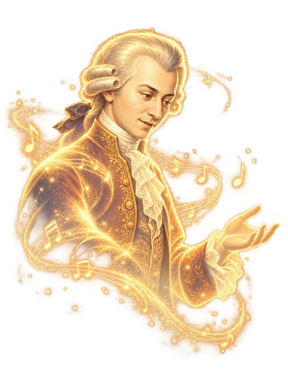
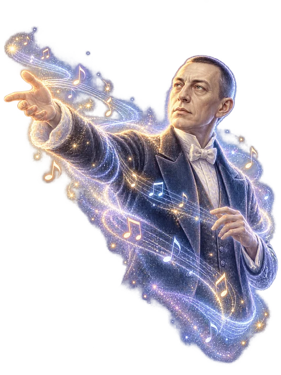

Viajar entre tonalidades▶ Pulsa para empezarclic o cualquier tecla
Modulación · Sesión 1Viajar entre tonalidades
Unidad 8 · Sesión 1
Modulación
Cada tonalidad es un reino. Hoy escucharás dos fragmentos muy distintos: uno que no sale de casa y otro que se va muy lejos.
Una frase que apenas sale de casa

⏱ Mozart0,0 s
⏱ Rachmaninov—
…y una que se va de viaje

⏱ Mozart0,0 s
⏱ Rachmaninov—
Cifrado de la armonía, pulso a pulsore menor
El camino de Do mayor
Como en un videojuegoCada tonalidad es una región del mapa. Empezamos en Do mayor: salta (espacio o toca la pantalla) para recoger cada acorde justo cuando suena.
Cuanto más arriba, más «exótico» dentro de la tonalidadIII · VII · V/V · V/VI lo más lejanoII · VI un poco de juegoIV · V grados tonales, los de los dictadosI la tónica, en el suelo
I sueloIV · V 1.ª alturaII · VI 2.ªIII · VII 3.ªV/V · V/VI 3.ª
Lo que has tocado, en partitura
Bajo en clave de fa · acorde en clave de sol · voces enlazadas
Siempre con las notas de la escala…
Los siete acordes de Do mayor nacen de sus siete notas
El viaje, en partitura
El coral que modula: Do mayor → La menor → Mi♭ mayor